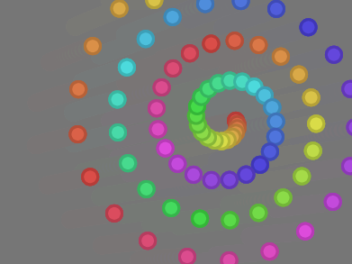
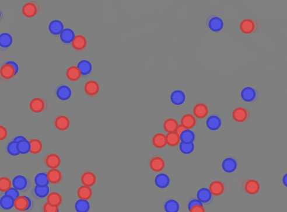
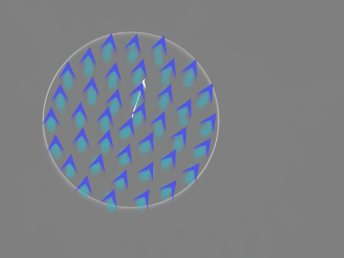
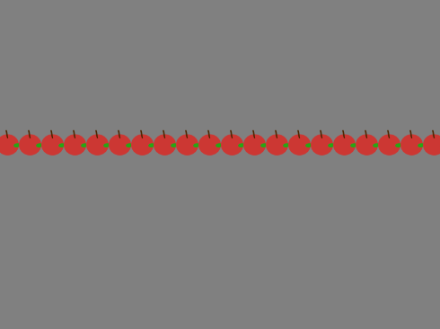

Particle Systems
Description:
This is a course assignment from Generative Methods where I had to create several particle systems to simulate phyiscal phenomena in the real world. In that project, I created an electromagnetic, newtonian gravity, Boids, a regular ball particle systems. The focus of this project is to create collision effects (bounce off of walls), trailing effects (trail particles), and particle interactivty (Newton/Coulomb).
This project was done using a predefined vector library for the particle physics and p5.js to draw on a canvas.
Link to project website: David's Particle System
Link to project source code: Particle System Source Code
Collision

This is a basic particle that gets repelled by the mouse. I have also created a bounding box to all four sides of the canvas to simulate inelastic collisions and reflection direction. The reflection direction can be mathematically represented by v1 - 2(v1 ⋅ n) * n where n is the unit surface normals of the bounding box. In this bounding box, the surface normals are simply ( with trailing effects0, 1), (1, 0), (-1, 0), and (0, -1). I am most proud of this one! Particles would bounce off the wall as expected but there is a problem where if a particle moves too fast, it could fly out of the box and never return.
Electromagnetism

This is an EM system attempting to simulate the Coulomb Force; every particle exerts a repuslsion or attraction force that is inversely related to their distance on each other(ie. like-particles repell, opposite-charges attract with a time complexity of n^2). There is also a boundary box like system 1 to simulate inelastic collision. When I let the code run, the balls will interact with each other and eventually disappear from the screen after a long time (speed up to max for 1 minute).
Boids

This is the Boids system. It is used to simulate bird flocking behavior. In this code, I adapted from the demo and added trailing effects, variation in color and range of the separation force, and my own tuning of the separation, cohesion, and alignment forces. This emergent behavior of this system is that it's controlled by the mouse (the particles chases the mouse), and that the planes (I will call them planes) will not leave the bounding circle.
Gravity

My fourth system is the gravity system. It's a very simple system where a row of apples falls under the influence of gravity (constant downward force). When they reach the bottom, each apple receives a different damping factor so their rebound height would have a variation.